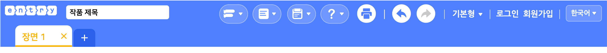
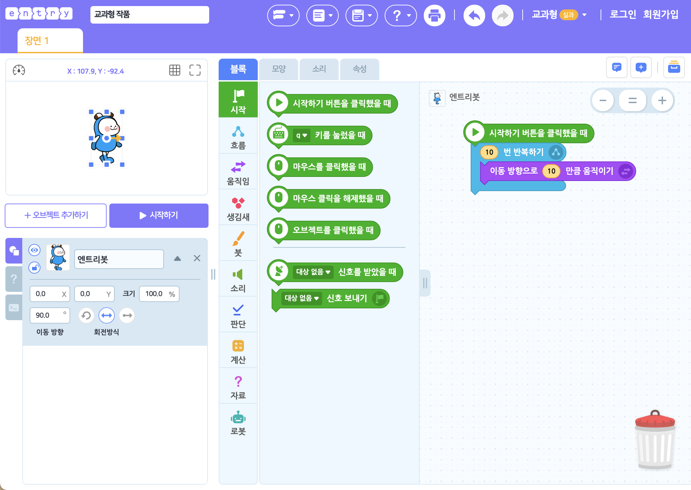
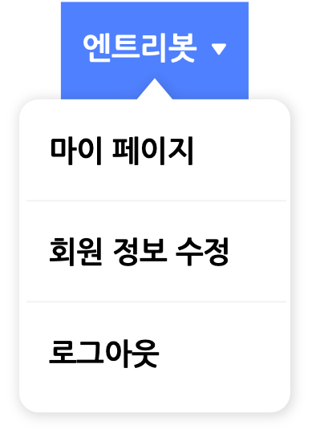

상단 메뉴

작품 만들기 화면의 상단 메뉴에는 작품의 제목을 짓거나, 저장하고 불러오는 등 작품의 기본적인 설정을 할 수 있는 메뉴들이 모여 있습니다.
가장 왼쪽부터 차례대로 살펴볼게요.
엔트리 로고
프로그래밍의 첫걸음, 엔트리의 로고입니다. 클릭하면 말풍선 메뉴가 표시됩니다.
말풍선 메뉴를 통해 엔트리 홈으로 이동하거나, 만들고 있는 작품의 상세 페이지로 이동할 수 있어요.
작품 제목
작품의 제목을 확인하고, 클릭해 새로 입력하거나 수정할 수 있습니다.
작품을 효과적으로 관리하기 위해서는 작품마다 각각 제목을 입력해주는 것이 좋아요!
만들기 모드

엔트리에서 작품을 만드는 방법을 선택합니다.
선택한 모드에 따라 블록 탭의 모양이 바뀌는데 블록을 조립해서 작품을 만들거나(블록 코딩), 텍스트를 직접 입력해 작품을 만드는(엔트리파이썬) 두 가지 모드가 있어요.
① 블록 코딩
기본적인 만들기 모드입니다.
블록을 드래그해서 조립/결합하는 방식으로 코딩할 수 있어요.
② 엔트리파이썬

프로그래밍 언어 중 하나인 ‘파이썬(python)’과 같은 문법을 사용하는 엔트리의 텍스트 코딩 모드입니다.
블록 꾸러미의 블록을 ‘텍스트 입력소’에 드래그하면 블록의 이름을 붙여넣거나 직접 입력하는 방식으로 코딩할 수 있어요.
새로 만들기/불러오기

새 작품을 만들거나, 온라인/오프라인에서 작품을 불러올 수 있어요.
각 메뉴를 클릭하면 지금 열려있는 작품에서 빠져나가게 되니 꼭 미리 작품을 저장해 주세요.
- 새로 만들기 : 새 작품을 만듭니다. ‘작품 만들기’를 클릭하는 것과 같아요.
- 작품 불러오기 : 로그인한 계정의 ‘나의 작품’ 또는 ‘북마크 작품’에서 작품을 불러옵니다.
- 오프라인 작품 불러오기 : 내 컴퓨터에서 ent 형식(확장자)의 엔트리 작품 파일을 불러옵니다.

‘작품 불러오기’를 클릭하면 나타나는 팝업 창입니다.
작품을 선택하고, 오른쪽 위의 ‘불러오기’ 버튼을 클릭해서 작품을 불러와요.
버튼 아래의 검색창을 이용해 원하는 작품의 이름을 검색할 수 있어요. 검색창 왼쪽의 목록 상자를 선택하면 원하는 작품을 더 쉽게 찾을 수 있습니다.
- 작품 유형
- 모든 작품, 게임, 생활과 도구, 스토리텔링, 예술, 지식 공유, 기타
- 작품 정렬
- 최신순, 조회순, 좋아요순, 댓글순
- 작품 기간
- 전체기간, 오늘, 최근 1주일, 최근 1개월, 최근 3개월
① 나의 작품

로그인한 계정에 저장한 작품을 불러올 수 있습니다.
계정에 저장한 작품이 없다면, ‘작품 만들기’ 버튼을 클릭해서 새 작품을 만들 수 있어요.
로그인하지 않았거나 오프라인 엔트리를 사용하는 경우에는 온라인 작품을 불러올 수 없습니다.
② 북마크 작품
로그인한 계정으로 북마크한 작품을 불러올 수 있습니다.
저장하기
작품을 로그인한 계정의 ‘나의 작품’(서버) 또는 내 컴퓨터에 저장합니다.
- 저장하기 : 지금 만들고 있는 작품을 저장합니다. 작품이 ‘나의 작품’에 없다면 새로 저장해요.
- 복사본으로 저장하기 : 작품이 ‘나의 작품’에 없다면 새로 저장하고, 아니라면 해당 작품을 원본으로 두는 새 작품으로 저장합니다.
- 내 컴퓨터에 저장하기 : 내 컴퓨터에 ent 형식(확장자)의 엔트리 프로젝트 파일을 저장합니다.
로그인하지 않은 경우 ‘내 컴퓨터에 저장하기’만 사용할 수 있으며, 오프라인 엔트리를 사용하는 경우에는 ‘저장하기’와 ‘복사본으로 저장하기’만 사용하실 수 있습니다.
도움말

‘블록 도움말’을 클릭하면 보조 창에서 도움말 탭으로 이동해요. 블록 꾸러미나 블록 조립소에 있는 블록을 선택하면 해당 블록의 설명이 나타납니다.
‘엔트리 사용자 위키’를 클릭하면 지금 보고 있는 사용자 위키 페이지가 새 창에서 열립니다.
출력하기
실행 화면과 모든 오브젝트, 코드, 속성(변수, 리스트, 신호, 함수)을 정리해서 볼 수 있는 기능이에요.

출력하기 버튼을 클릭하면 나타나는 창입니다.
오른쪽 위의 인쇄 버튼을 클릭하면 전체 페이지를 인쇄할 수 있어요.
되돌리기/되살리기

작품 내 대부분의 작업을 이전으로 되돌리거나 이후로 되살리는 유용한 기능입니다.
왼쪽 버튼을 누르면 되돌리고, 오른쪽 버튼을 누르면 되살립니다.
이 기능은 단축키로도 편리하게 사용할 수 있어요.
| 기능 | 단축키 (윈도우/맥 공통) |
|---|---|
| 실행 취소 | ctrl + z |
| 다시 실행 | ctrl + shift + z |
기본형/교과형 선택

엔트리에서 가능한 만들기 형태입니다. 하나씩 살펴볼게요.
① 기본형

기본형에서는 엔트리의 모든 기능을 사용할 수 있어요.
② 교과형

교과형은 수업에서 활용하기에 적합한 만들기 형태입니다.
난이도를 낮추기 위해 복잡한 기능을 뺀 최소한의 기능만 이용할 수 있어요. 블록의 이름도 기본형과 아주 조금 다르니 유의해 주세요.
로그인 메뉴
로그인한 계정을 클릭하면 나타나는 메뉴입니다.
각 메뉴를 클릭하면 지금 열려있는 작품에서 빠져 나가기 때문에 꼭 먼저 저장해주세요.
로그인하지 않은 경우 ‘로그인’ 또는 ‘회원가입’을 클릭할 수 있어요.
언어 선택

만들기 화면에서 표시되는 언어를 변경할 수 있습니다.
사용 가능한 언어는 한국어와 영어입니다. 일본어는 LINE entry에서 사용할 수 있어요.